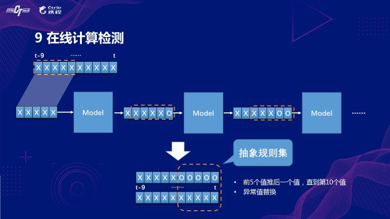

前言
上一周做了几天关于异常检测和根因分析的调研，了解了一些关于 AIOps 的内容，觉得挺有意思的，也是近期工作中会开展的相关内容。
为了拓宽思路，归纳了现有的一些异常检测和根因分析系统所用到的指标维度、算法模型和系统架构。当然，想要真正理解这些系统，还要花更多的功夫，光调研几天是不够的。
携程实时智能异常检测平台的算法及工程实现
主要目标
异常检测算法的优化，实时性告警的工程技术实现。
算法模型指标选择
订单类指标，关键是要确定一致认可没有歧义的异常数据评估标准。
异常数据样本来源
订单类异常数据来自各个渠道的告警和报障，包括监控系统、用户报障、内部人员发现的问题，如果确认是一个影响了订单的生产故障就会被记录下来，产生标注。
- 对于订单这个指标而言，只要故障影响到订单，就是异常；
- 同时所有订单问题都被记录在处理中心，代表了系统所有可见异常。这为算法迭代和优化提供了明确的检验标准和可靠的标注。
算法选择
引入LSTM模型来处理长期时间序列数据。
此前，也借鉴了业界采用较多的统计分析方法，框定滑动样本集做数据处理和转化，经过归一化、去周期、去趋势，将最新采集到的数据点经过同样转换，和样本集的残差序列进行比较，超出一定范围就判断为异常；或是综合离群点计算的方法做投票，多数算法认为异常则判断为异常。
但是上述这种做法并没有提升报警质量，误报和漏报的矛盾点是和规则化告警类似的。
离线训练
在线检测

检测结果
相比于规则化告警系统，算法的告警量平均压缩了10倍左右，检出的故障数量反而略高。
漏报原因分析：指标正常的用户人工报障，肉眼及系统都无法检出；绝对值小导致少量波动带来巨大影响；历史数据波动比较剧烈；趋势变化明显。
实时性工程
在 Storm/Spark streaming/Flink 里选择了 Flink，因为它滑动窗口灵活，数据可以基于自身时间戳来统计，同时 Flink 本身是为实时计算设计的，容错性比较好，同时也预留了支持秒级数据采集粒度的能力。从 Python 转到了 Java，减少了数据校验的时间开销。
系统架构
算法局限
服务器压力大，训练时间过长，内存占用多，所需资源随检测指标数量线性增长。对绝对值较小的指标没有较好的解决方案，很容易误报。对非周期性随机序列，无法学习出模式，无法判断。
DataPipeline业务异常实时自动化检测
主要目标
引入AI减少人工。
基于人工方法的不足：
- 大量业务指标没被实时监控；
- 告警洪流；
- 误报漏报；
- 人工维护成本。
AI系统主要挑战和设计理念
主要挑战：
- 异常定义模糊且不同数据指标表现形式千差万别；
- 很难获取标注数据；
- 对算法和系统的实时性和可扩展性要求很高。
设计理念：
- 无/半监督机器学习算法为主；
- 算法跟业务解耦；
- 异常相关性学习和根因分析；
- 算法扩展性和实时性。
算法实现思路
步骤：
- 接入数据；
- 对正常表现模式建模；
- 异常的检测和过滤；
- 关联多个异常并自动告警。
算法关键是要开发算法来根据数据本身的底层表现自动选择最合适的算法进行拟合。最常用的算法可以分为基于统计模型的算法和深度学习的算法。对于周期性学习，鉴于实时性和可扩展要求，用subsampling优化降低计算复杂度。对于相关性学习，鉴于告警洪流问题，采取多变量分析，在整体层面检测异常，给用户汇总后的告警，但是该方法很难规模化，且解释性较差。
系统架构
产品功能组成：接入企业的各种业务系统。挑战是如何将多源异构的数据以一致的方式接入，且可以同时处理流式和批式数据。
核心系统架构：主要分为线上处理和线下模型训练。
优酷技术实践：自动检测及修复视频播放异常
异常指标
抽象出流程异常和内容异常两类问题。
针对异常进行量化，并设定优先级，多个异常同时发生时上报优先级高的异常。
定位异常发生的模块并监控异常发生时各模块的工作状态，进行自修复工作。
根据模块采集到的信息制定异常映射表。
制定视频播放、信息查询、异常检测、自动修复、恢复播放的处理流程。
应用效果
监控上线后，可大概定位问题所在，部分异常可自行修复，使相关客诉降低了50%。通过监控发现一批硬解码能力较差的机型，用降档策略提升播放体验。通过监控数据，使高计算复杂度业务对播放业务是否有影响有了很直观的衡量。
播放链条监控为技术优化提供了方向和衡量标准。
未来规划
提升精准度，提升自动化程度，扩展监控内容。
Yahoo大规模时序数据异常检测技术
整体架构
Yahoo 的异常检测综合系统 EGADS 框架有三个主要部分：时间序列建模模块、异常检测模块和报警模块。
由于监控服务每秒要处理数百万个数据点，所以可扩展、精准且自动化的异常检测至关重要。系统作为独立平台，可用作大型系统中的库。系统和监控服务集成架构如图。
由于CPU负载、I/O和内存占用方面的可扩展性要求，并且数据点处理也要尽可能高效，所以模型存储在内存中，且为了控制成本，模型应尽可能小。
异常检测算法
EGADS 主要检测三类异常：异常值、波动点和异常时间序列。
异常值检测两类算法：插件方法和基于时间序列分解的方法。
变点检测：基于时间窗口的变点检测，建模测量残差分布。
异常时间序列检测：基于各种时间序列特征将时间序列聚类，检测异常服务器或者发现相似的异常时间序列。
时序数据特征
时序建模和指标选择
有大量候选模型，不同模型对精度影响很大，要基于数据特征进行模型选择。同时，时序模型需要高性能技术以支持大规模数据流的实时计算，因此要在模型大小、训练时间和准确性之间权衡。首先设定资源和模型训练时间目标，再选择相应模型。用于建模的指标列表如图。
没有一个最佳异常检测模型能适合所有业务场景，不同算法需要结合检测不同类型的异常来确定。为了系统能优雅和稳健地处理数据中存在的各种异常现象，EGADS 被构建为将一组异常检测模型组合成一个最佳框架的库，这些模型的异常被转发到过滤组件以进行精确的异常检测。
异常的重要性也取决于实际的应用场景，过滤阶段要使用不同的模型特征，以得到更高的精确率和召回率。
原文：Yahoo大规模时列数据异常检测技术及其高性能可伸缩架构
百度大规模时序指标自动异常检测实战
两个挑战
数据规模大，曲线的特征差异明显。
三个场景
- 场景一：数据无规律波动但在较小波动范围内。设定阈值，超过告警。累积法，滤除毛刺，考虑了数据的累加效应。
- 场景二：长期波动幅度大，但短期波动幅度小，体现为较光滑的曲线。环比附近的数据，检查是否存在突然的大幅上涨或下跌。最近两个窗口的均值变化比例，在变化比例空间检测突升或突降。
- 场景三：有规律的周期性波动。与历史数据作同比。根据z-score得出z空间，设置阈值发现异常。
算法选择自动化
自动化需求：大量曲线的算法选择成本很高。算法在不同时段的参数不同，参数配置成本高。曲线特征会随业务系统的结构调整而发生变化，需要定期维护。
算法选择决策：建立数据与算法的映射，周期性数据配置同比算法，非周期数据通过波动范围来界定。长期波动远大于局部波动的时候，倾向于突升突降；全局波动近似等于局部波动的时候，恒定阈值算法更合适。
周期数据判断方法：基于差分的数据周期特性判断方法。
参数配置自动化
恒定阈值算法：根据 ECDF（经验累积概率分布曲线），只要配置经验故障概率，就可以找到阈值，通过补偿系数解决ECDF与真实CDF差距问题。
突升突降算法：把原始数据转换到r空间，在r空间上设置恒定阈值，再设置窗口大小。
同比算法：使用z-score把原始数据转换到z空间，在z空间上配置恒定阈值参数，同比天数和窗口大小一般使用全局设置。
腾讯蓝鲸数据平台之告警系统
监控对象
业务规则和系统可靠性。
监控指标和策略
系统可靠性监控目标：
- 系统是否在持续完成设定好的工作；
- 用户体验是否良好；
- 问题或者瓶颈在哪里。
数据库采集指标：DB请求数的绝对量，DB正确响应相对请求数的占比等。
用户体验采集指标：平均排队时间，平均总响应延迟，99%/95%/90%的响应延迟。
故障定位：每个层次做告警，顶层服务告警触发自动定位程序，按依赖关系和大致时间范围定位告警之间的关联。
基于曲线平滑性的异常检测
优点：
- 依赖的数据少，不依赖于周期性；
- 非常敏感，容忍的波动范围小。
缺点：
- 过于敏感，容易误报；
- 业务曲线自身可能有规律性的突升突降。
最佳使用方式是不用一根曲线，而是用几条相关的曲线，如果同时出现平滑度破坏，且与业务规律的趋势相背离，则认定为异常。
基于绝对值的时间周期性的异常检测
优点：
- 计算简单；
- 可以确保发现大故障。
缺点：
- 依赖周期性的历史数据，无法对新接入曲线告警；
- 非常不敏感，小波动无法发现。
基于振幅的时间周期性的异常检测
优点：
- 比绝对值要敏感；
- 利用时间周期性规避了业务曲线自身的周期性突升突降。
缺点：
- 要求原曲线平滑；
- 周期性突升突降的时间点必须重合，不然会误报；
- 按百分比计算在低峰容易误报；
- 突降不一定代表故障，而可能是上层服务波动。
基于曲线回升的异常判断
在异常点的几个时间点后重跑模型去判断曾经发生过一个异常，是异常的事后发现机制。用半自动化的方式建立一个历史异常的样本库，可以用作以后更复杂的机器学习算法的训练集。
原文：DockOne技术分享（十四）：腾讯蓝鲸数据平台之告警系统
爱奇艺群体用户卡顿比异常自动化处理系统
点播卡顿原因
主要两种：
- 播放器解码发生的解码卡顿；
- 数据缓存不足发生的网络卡顿。
解码卡顿主要原因是用户使用的客户端性能不足，次要原因是客户端程序存在bug。解码卡顿故障率常年稳定，极少突变。本文主要研究网络卡顿。
卡顿比概念
以每个5分钟为统计时间单位，该5分钟的卡顿比=（5分钟卡顿一次及以上独立用户数）/（5分钟内总独立用户数）。分子和分母随统计维度（省份、运营商、IDC、客户端类型等）同时变化。
卡顿异常分类
内部系统：客户端网络数据下载模块、客户端播放事件统计模块、视频CDN调度系统、视频CDN服务器等。可能影响用户体验，也可能是系统统计错误。
服务器端问题：IDC流量跑满、交换机故障、视频服务器故障等。一定会影响用户体验。
运营商网络问题：上联链路、省干等问题。一定会影响用户体验。由于问题在于运营商，只能通过商务投诉和协调，处理效率会很低。
用户端问题：研究群体用户行为，而不是某个用户的断网问题。不易排查，需要对卡顿用户进行精确的用户画像和深入分析。一定会影响用户体验，但是不一定影响正常观看视频的用户，不一定需要特殊处理。
卡顿感知系统
实时分析所有细粒度卡顿比，在进行历史对比、过滤的基础上，通过用户数量对比及聚类方法给出疑似概率。在此基础上，系统利用SVM方法将服务器端的下载速度训练成预测的卡顿比，并将此与真实的卡顿比对比，相差过大说明是统计系统的问题。
内部管理机制：针对卡顿比制定了多项管理制度。
监控自动化
数据多维度监控。通过阈值、对比等方法，异常告警准确率只有83%左右。在将流量数据进行傅立叶变换后，在时域和频域同时进行监控，将准确率提高到了97.6%以上。
用户研究
处理结果表明，有20%的卡顿比问题与用户行为相关。在常规处理基础上，将所有客户端统计中异常的用户行为（作弊行为、攻击行为等）按照运营商、省份等维度进行统计；若5分钟内某个统计维度的异常用户卡顿达到一定数量，直接告警。另外，离线的卡顿数据接入到用户行为分析系统中，将卡顿作为用户行为的一个维度进行训练，补充了目前的用户行为研究方法。
卡顿异常自动分析系统
主要两个功能:
- 对接监控的相关接口，将卡顿预警与其他告警进行关联；
- 进行离线查询，输入相应的疑似卡顿问题时间段后，分析系统能够自动获取各个监控系统的离线数据，并根据预设算法进行分析，直接给出此卡顿比问题的最可能原因。
目前执行单次任务的时间在3分钟左右。
实战结果
除运营商问题以外的大规模卡顿比异常，超过93%能够在15分钟内解决；超过99.9%的问题能够在24小时内解决。运营商导致的卡顿比异常问题，超过97%能够在20分钟内确定问题故障点并发起投诉。
宜信智能监控平台建设实践
智能运维工程实践
异常检测，根因分析，告警收敛和智能降噪。
异常检测框架
全维度的数据可关联
可以是通过画像建立的强关联关系，比如宿主机与虚拟机、虚拟机与应用服务器的关系；可以是通过调用链路或服务流图谱建立的强关联关系；也可以是通过机器学习算法建立的关联关系，比如同一时间窗口同时变化的指标，可能存在某种关联。
根因分析
在根因分析和定位的过程中，顺带实现了告警收敛和智能降噪。